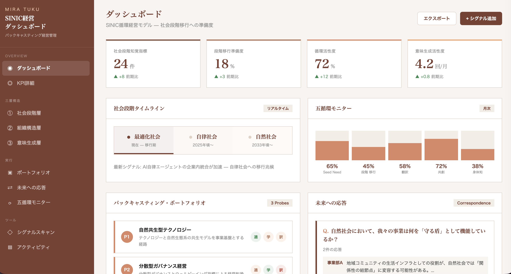
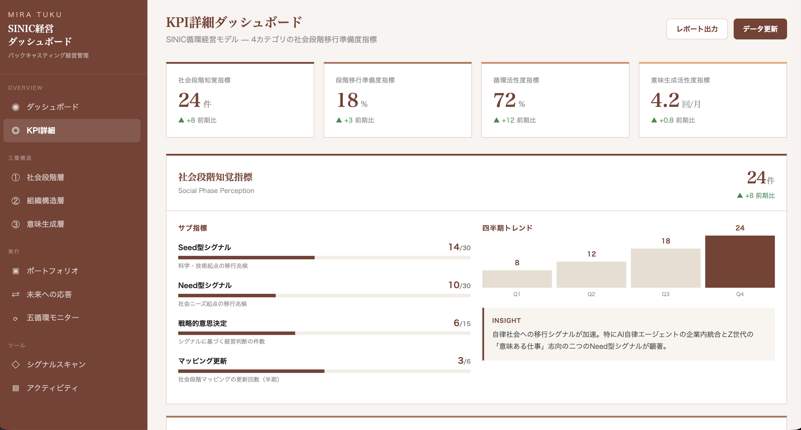

第1章 エグゼクティブサマリー
本レポートは、SINIC経営コンソーシアム2025の1年間にわたる活動の成果を統合し、SINIC理論を基盤とした新しいバックキャスティング経営フレームワークを提案するものである。従来の経営学が前提としてきた「現在の延長線上に未来がある」というフォアキャスティング的世界観では、社会構造そのものが非連続的に変容する時代の経営を十分に導くことができない。SINIC理論が描く「最適化社会から自律社会、さらに自然社会へ」という社会段階の進化は、単なる未来予測ではなく、企業が自らの存在意義を根本から問い直し、経営の基本設計そのものを書き換えるための羅針盤として機能する。
本コンソーシアムでは、トヨタ自動車、日本たばこ産業、サントリーホールディングス、パナソニック ホールディングス、資生堂、住友生命保険、インテック、日本IBMの8社が、約1年間にわたって6回のセッションと国内外のフィールドトリップを通じ、「自然社会」の解像度を高めながら、そこから現在の経営へと逆算する方法論を探求してきた。喜界島のサンゴ礁生態系、イノカの環境移送技術、バリ島ウブドのトリ・ヒタ・カラナ哲学、資生堂のAWE体験技術といった多様な実地体験を通じて、理論だけでは到達できない身体的な理解を得ることができた。
本レポートでは、まずSINIC理論の核心である科学-技術-社会の円環的関係とSeed型・Need型のイノベーション・メカニズムを現代的に再解釈する。次に、コンソーシアムの対話から浮かび上がった8社の知見を体系的に総括し、既存の経営フレームワーク（Three Horizons、両利きの経営、ダイナミック・キャパビリティ、シナリオプランニング、バックキャスティング）がそれぞれに抱える限界を明らかにする。そのうえで、SINIC理論固有の構造を活かした新しい経営フレームワーク「SINIC循環経営モデル」を提案し、各社が自社の文脈において実装するための具体的なガイドラインを示す。このフレームワークは既存の経営学の延長ではなく、社会段階の非連続的移行という構造そのものを経営の設計原理に組み込む、根本的に新しいアプローチである。
第2章 SINIC理論の再解釈
2.1 理論の原点：立石一真の洞察
SINIC理論（Seed-Innovation to Need-Impetus Cyclic Evolution）は、オムロン創業者・立石一真が1970年の国際未来学会で発表した社会発展理論である。その核心は、科学・技術・社会の三者が一方向の因果関係ではなく、円環的に相互作用しながら社会全体を進化させるという動的モデルにある。この理論が50年以上を経てなお価値を持ち続けているのは、それが単なる未来予測のリストではなく、変化のメカニズムそのものを説明する構造理論だからである。
立石一真がこの理論を着想した背景には、ノーバート・ウィーナーのサイバネティックスの影響がある。通信工学と制御工学を統合したサイバネティックスが生体と機械の類似性を見出したように、SINIC理論は科学的発見と社会的変容の間にフィードバック・ループを見出した。この着想は、現代のAI・ロボティクス・脳科学が高度に発展した今日の状況を、1970年の時点で構造的に予見していたと言える。立石が中央研究所の設立に当時の資本金の4倍を投じ、社員に「未来学を学べ」と業務命令を下したのは、この理論が単なる知的遊戯ではなく、経営判断の根幹を成す実践哲学であったことを示している。
ここで注目すべきは、立石の経営実践そのものがSINIC理論の体現であったという点である。1960年の中央研究所設立は、10年後の社会に必要となる技術人材を先制的に採用するSeed型の意思決定であり、自動改札機や血圧計の事業展開は、社会のニーズが顕在化する前にそのニーズを予見したNeed型の先行投資であった。理論と実践のこの不可分の一体性は、SINIC理論が「学者の理論」ではなく「経営者の実践知」であることを裏づけている。
2.2 Seed型とNeed型：二つのイノベーション・サイクル
SINIC理論の最も独創的な概念は、イノベーションの方向性を二つの循環として捉える視点である。Seed型イノベーションは、科学的発見が先行し、それが新しい技術を生み出し、やがて社会にインパクトを与えるという「科学から社会へ」の流れを指す。たとえば、半導体の物理学的発見がコンピュータ技術を生み、情報化社会を実現した過程がこれにあたる。一方、Need型イノベーションは、社会のニーズが先行し、それが技術開発を促し、さらに新しい科学的知見を生むという「社会から科学へ」の流れを指す。高齢化社会のケアニーズが介護ロボットの技術開発を促し、それが人間工学や認知科学の新たな知見を生み出すような過程がこの典型である。
重要なのは、この二つの方向が交互に、そして同時に作用することで、技術と社会が螺旋状に共進化していくという理解である。従来の経営学はしばしば技術を「外部環境」として扱い、企業はそれに「適応する」主体として位置づけてきた。しかしSINIC理論においては、企業もまた科学-技術-社会の循環の中に位置する能動的な参加者であり、その循環を加速させることも減速させることもできる存在である。この視点は、バックキャスティング経営の理論的基盤として極めて重要な意味を持つ。なぜなら、企業が「望ましい未来」に向けて行動することは、単にその未来を待ち受けることではなく、Seed型の種まきとNeed型のニーズ形成の両面から、社会進化の循環そのものに関与することを意味するからである。
2.3 社会段階モデルの現代的読み直し
SINIC理論は人間社会の発展を複数の段階として記述しているが、本コンソーシアムにとって最も重要なのは、現在の「最適化社会」から「自律社会」（2025年頃以降）を経て「自然社会」（2033年頃以降）へと至る移行の過程である。
最適化社会とは、AI、ビッグデータ、IoTなどのテクノロジーによって社会の効率性が極限まで追求される段階である。企業経営においても、データドリブン意思決定、サプライチェーン最適化、顧客体験のパーソナライゼーションなど、あらゆる領域で「最適解」が追求されている。しかしこの社会段階の本質的な限界は、最適化の対象となる目的関数そのものが問われないまま、手段としての効率性だけが際限なく高度化していく点にある。コンソーシアムの議論では、この構造を「最適化の呪縛」と呼び、参加各社がそれぞれの文脈で直面する課題として共有された。
自律社会は、組織や社会からの外部統制ではなく、個人や組織が自らの判断と価値観に基づいて自律的に行動する社会である。エネルギーの地産地消、自己実現を軸とした働き方の選択、分散型のガバナンス構造などがその特徴とされる。経営学の文脈では、ティール組織や自己組織化といった概念がこの段階に対応する。しかしSINIC理論が示唆するのは、自律社会は到達点ではなく通過点であるということだ。自律が個人の意思決定の自由度を高めるだけでは、社会全体としての調和や持続可能性は担保されない。
自然社会は、テクノロジーと自然が対立するのではなく共存し、人間が自然を「制御する対象」としてではなく「一部として帰属する全体」として認識する社会である。これは原始社会への逆行ではなく、高度に発展した科学技術を持ちながら、自然のメカニズムに学び、自然と同調するシステムを構築する段階を指す。コンソーシアムの海外フィールドトリップでバリ島のトリ・ヒタ・カラナ（「神・人・自然の調和」）を体験した参加者たちは、この概念が単なる理想ではなく、特定の文化圏では何百年にもわたって実践されてきた現実の社会原理であることを身をもって理解した。
2.4 円環的進化と経営の接続
SINIC理論を経営に接続する際に決定的に重要なのは、社会段階の移行が不可逆的かつ非線形的であるという点である。これは、ある段階の最適化を極限まで推し進めても、次の段階には到達できないことを意味する。情報化社会の最適化をどれだけ精緻にしても、それだけでは自律社会は実現しない。段階の移行には、その段階の基本的前提そのものを問い直す質的転換が必要である。ここに、従来型のフォアキャスティング経営の根本的な限界があり、同時に、SINIC理論に基づくバックキャスティング経営の固有の価値がある。次の社会段階を「望ましい未来」として描き、そこから現在を逆算することで、はじめて質的転換の方向性が見えてくるのである。
さらに、SINIC理論が当初設定した指標にも検討が必要である。立石は「一人当たりGNPが4万米ドルを超えたとき」を自律社会への到達指標としたが、日本はすでにこの水準を達成していながら精神的充足度の課題が残存している。この事実は、物質的指標から精神的指標への転換が社会段階の移行の不可欠な構成要素であることを裏づけている。GNH（国民総幸福量）やOECD「より良い暮らしイニシアチブ」といった新しい指標体系は、SINIC理論の社会段階モデルを現代的に補完するものとして注目に値する。
第3章 コンソーシアムからの知見総括
3.1 コンソーシアムの全体像
SINIC経営コンソーシアム2025は、2025年4月のキックオフミーティングから2026年3月の最終セッションまで、計6回のセッションと4回のフィールドトリップ（喜界島、イノカ、バリ島、資生堂）を実施した。参加企業は、トヨタ自動車、日本たばこ産業（JT）、サントリーホールディングス、パナソニック ホールディングス、資生堂、住友生命保険、インテック、日本IBMの8社であり、いずれも日本を代表する企業でありながら、業種・規模・事業構造が大きく異なるメンバー構成となった。この異質性こそが、SINIC理論という共通の羅針盤のもとで多角的な議論を可能にした最大の資産であった。
プログラムは段階的に設計されていた。第1回のキックオフでは、ヒューマンルネッサンス研究所エグゼクティブ・フェローの中間真一氏によるSINIC理論の解説と、名古屋商科大学ビジネススクール教授の澤谷由里子氏による「不確実性の高い状況下の経営課題」についての講義が行われ、理論的出発点が共有された。第2回では、立教大学准教授の廣瀬文乃氏が野中郁次郎の知識創造理論を踏まえた「知識創造と野性の経営」について、東京大学教授の國吉康夫氏が「身体性と創発」について講義し、最適化社会の限界を突破する鍵として知識創造プロセスと身体性が提示された。第3回では、長野県立大学教授の大室悦賀氏が「非エゴと数学的アプローチ」について、喜界島サンゴ礁科学研究所の後藤明氏が「ヒューマンビカミング人類学と神話の役割」について語り、人文知と科学知の交差から経営を問い直す視座が開かれた。第4回の統合化準備セッションでは、自然社会の特性を表す6つの概念仮説が提示され、「設計されたカオス」やアブダクション（仮説的推論）に基づく意思決定のあり方が議論された。第5回の共有・まとめセッションと第6回の最終セッションでは、各参加企業が自社の文脈でこれらの知見を経営にいかに実装するかを発表し、議論を集約した。
3.2 8社の知見：共通する発見
コンソーシアムを通じて、業種や立場の異なる8社の間に、驚くほど共通する発見が浮かび上がった。以下に、ヒアリングレポートと議事録から抽出された主要な知見を整理する。
SINIC理論は「予測ツール」ではなく「方向確認ツール」である
キックオフ時点では、多くの参加者がSINIC理論を「未来を予測するためのフレームワーク」として捉えていた。しかしセッションを重ねるなかで、認識は大きく変容した。トヨタ自動車は最終セッションにおいて「未知の未来を言い当てる予測ツールとしてではなく、自社が思い描く方向性が時代の潮流と合致しているかを確認するためのツールとして活用できる」という認識に到達した。サントリーホールディングスも「現在から未来をコントロールしようとする順方向の思考から、あるがままの社会を受け入れバックキャストする逆方向のベクトルへの転換」を言語化した。この認識の転換は、SINIC理論を経営に活用する際の根本的な態度の変化を意味している。未来を「当てに行く」のではなく、未来の方向性を感じ取りながら自社の現在地と進路を検証するという姿勢は、コンソーシアム全体を通じて醸成された最も重要な共有認識であった。
「最適化の呪縛」からの脱却が共通課題である
参加各社は、それぞれの事業領域で「最適化社会」の恩恵を受けながらも、その限界に直面していた。パナソニック ホールディングスや資生堂が指摘した「長期ビジョンと短期収益の相克」、トヨタ自動車の「採算性と地政学リスク」に象徴されるように、短期KPI偏重の評価制度が長期投資を後回しにし、将来価値を説明しても社内外を説得しきれない構造的課題が各社に共通していた。最終セッションではインテックが「あらゆるリソースが成果に直結することを求められる中で、新しい発見やセレンディピティが入り込むための余裕や遊びが失われている」と述べ、最適化の過剰推進が逆説的にイノベーションの余白を奪っている構造を指摘した。トヨタ自動車も「新しいテクノロジーやトレンドを追いかける現在中心主義に陥り、社会の深層でゆっくりと動いている本質的な潮流を見落としてしまう」傾向を課題として挙げている。この構造的課題は、最適化社会の内部にいる限り解消できないものであり、社会段階の移行という外部的な視座を導入して初めて、その課題の本質が可視化される。
抽象的ビジョンと現場実践の翻訳が最大のボトルネックである
第1回のヒアリングからトヨタ自動車の「ストーリーテリング不足」、JTの「共感形成が最大ハードル」、サントリーホールディングスの「抽象的未来観を製品開発へ落とす難航」として報告されていた課題は、最終回まで一貫して議論の中心に位置し続けた。第5回のヒアリングではトヨタ自動車が「経営層の抽象的なビジョンと現場アクションの乖離」を、インテックが「抽象的な未来シナリオの具体的な事業計画への翻訳」を課題として再び挙げている。第6回の最終セッションでは、サントリーホールディングスから「長期間の議論を経て得られたコンテクストを持たない社内メンバーに対し、コンソーシアムでの学びをそのまま説明し深い理解を得ることは極めて難しい」という率直な認識が示され、インテックも「言葉による説得だけでは得られない腹落ち」の重要性を強調した。この知見は、新しいフレームワークが「翻訳可能性」を設計原理として組み込む必要があることを示唆している。
異業種対話の不可替的な価値
コンソーシアムの1年間を通じて、参加企業は異業種対話の価値を繰り返し確認した。第1回のヒアリングではトヨタ自動車の「異業種交流が想像外の新規ビジネスを芽生えさせる」、パナソニック ホールディングスの「産官学連携拡大」、住友生命の「共創プラットフォームへの期待」として語られた期待は、セッションを重ねるごとに深まっていった。第5回ではインテックが「自前主義の脱却と他社との強固なネットワーク構築」や「異質な知見との衝突による認識パラダイムの拡張」に期待を示し、トヨタ自動車は「異業種連携による『ことづくり』の実現」を具体的な共創への期待として語った。最終回ではインテックから「自社単独では困難な変革を、コンソーシアムの仲間とまとまって実践することで、外部環境の変化として社内に突きつけ変革のテコとする」という、異業種連携の戦略的活用法が提示された。
3.3 フィールドトリップからの身体知
本コンソーシアムの特筆すべき特徴は、知識偏重に陥ることなく、身体的体験を通じた理解を重視した点にある。フィールドトリップは単なる視察ではなく、「自然社会」の具体的なサンプルに身体ごと浸ることで、言語的理解の限界を超えた認識の変容を促す装置として設計されていた。
喜界島のフィールドトリップでは、サンゴ礁の生態系が経営の比喩として多層的に読み解かれた。「超長期の記憶を重ねる地層的経営」は、企業が四半期ごとの成果ではなく数世代にわたる時間軸で価値を蓄積する経営のあり方を示唆する。「多様性を引き寄せるラグーン型組織」は、均質な強者の集団ではなく多様な存在が共存する生態系としての組織を指し示す。「生態系の一部と捉えるエコシステム経営」は、企業が生態系の外部に立つ管理者ではなく、生態系の中に位置する一参加者であるという認識の転換を促す。
イノカの技術セッションでは、自然環境を物理的に再現する環境移送技術、AIを第7界の生物と位置づける共生モデル、エントロピーを基軸とする次世代の新経済圏、「好き」だけでつながる究極の多様性組織など、テクノロジーと自然の共生が具体的な事業モデルとして提示された。代表取締役の高倉葉太氏が体現する「生き物への偏愛を原動力とした新規事業創出」は、合理的計算を超えた情動が事業の源泉となりうることを示す事例として、参加者に深い印象を与えた。
バリ島ウブドのフィールドトリップは、参加者に最も深い変容をもたらした。700年の歴史を持つウブド王族との対話、世界遺産の水利システム「スバック」の視察、グヌンカウィ・スバトゥ寺院での浄化・沐浴体験を通じて、参加者は「トリ・ヒタ・カラナ」（神・人・自然の調和）という哲学が、観念的な思想ではなく、数百年にわたって実際に社会を統治してきた実践的な原理であることを身をもって経験した。スバックの水利システムは、中央集権的な管理ではなく、農家同士の自律的な調整によって運営される分散型ガバナンスの実例であり、自律社会の組織モデルの具体像を体感的に理解する契機となった。この体験は、「自然社会」という概念が単なる理論上の構築物ではなく、特定の文化圏においてはすでに実現されている社会のあり方であるという認識を参加者にもたらした。
資生堂のグローバルイノベーションセンターでの技術セッションでは、「畏敬の念（AWE体験）」が科学的に解明され、技術的に再現可能であることが示された。関西大学教授の石津智大氏が、脳科学の視点から畏敬の念による「セルフロス」（自己縮小）が利他性や向社会性といった「ユーダイモニア（持続的幸福）」に寄与することを説明し、資生堂の山脇竹生氏が「ビューティーリトリートシアター」として映像体験の実装を紹介した。このセッションは、自然社会における「幸福」の質的転換、すなわち個人的快楽（ヘドニア）の追求から持続的で社会的な幸福（ユーダイモニア）への移行が、脳科学と技術によって具体的に設計可能であることを示した点で、コンソーシアムの議論に深い示唆を与えた。
3.4 各社の探索方向と共通構造
第5回の共有・まとめセッションでは、各社が自社の文脈でSINIC理論をどのように経営に接続するかを発表した。その主なテーマは、経営OSのアップデートと「生成らせんモデル」を用いた企業の存在意義（パーパス）からの再定義、人工的制御からの脱却と自己調整・自然のコントロールへの移行、短期的な効率や経済合理性を超えた「無形価値」「回復（レジリエンス）」「共生」を組み込む事業・評価指標の転換、均質化されたグローバル展開から地域の固有性に根ざしたローカルへの回帰と分散型クラスターの形成、AIや量子テクノロジーの進化がもたらす人間・社会の変容と倫理的・実践的アプローチの模索であった。
これらの発表から見えてくる共通構造は、どの企業も「効率性の最適化」という現在の経営の基本設計を維持したまま未来に対応することは不可能だと認識している点であり、同時に、その基本設計を変更する具体的な方法論がまだ見えていないという誠実な自覚を持っている点であった。最終回の第6回セッションでは、トヨタ自動車から「他社との長期的な相互作用を通じて、表面的な理解に留まらず、本質的に変わったと気づくレベルまで自身の経営観を深め練り上げていく」という、変容のプロセスそのものへの注目が示された。サントリーホールディングスは「与えられた正解をなぞるのではなく、対話を通じて自社の頭と心で未来との関係性を再構築し、自問自答を繰り返す組織としての力が養われる」と述べ、インテックは「個人の変容を起点とした次世代経営モデルへの転換」を指向した。
3.5 日本IBMの知見：外部視点としての価値
初回から参加してきた日本IBMは、グローバルテクノロジー企業としての独自の視座を提供した。特に「全地球的かつ普遍的な視座の獲得」を期待として掲げつつ、同時に「既存ビジネスモデルを前提とした長期投資の論理的破綻」「理念の先行による経済合理性の欠如」「既存事業や固定されたコアバリューへの固執」を課題として指摘した。IBMが重視した「徹底したビジネス的リアリズムの保持」と「エネルギー最大化の条件へ向かう自己変容のダイナミズム」という二つの視点は、他の参加企業にとっても重要な気づきとなった。前者は、壮大な未来ビジョンが「空中戦」に終わることへの戒めとして、後者は、事業の核を躊躇なく移動させる動的姿勢の必要性として、最終セッションの議論に大きく貢献した。IBMが自らの歴史の中でメインフレームからサービスへ、さらにクラウド・AIへと事業の核を移動させてきた実績は、この「自己変容のダイナミズム」の具体的実践例として、他の参加企業に現実味のある参照点を提供した。
第4章 既存経営フレームワークの限界
4.1 Three Horizons Framework：成長管理としての限界
マッキンゼーが開発したThree Horizons Framework（三つの地平フレームワーク）は、企業の成長機会をH1（既存事業の最適化、0-3年）、H2（新興機会の開発、3-10年）、H3（長期成長機会の創造、10年以上）の三層で管理する枠組みである。Baghai、Coley、Whiteが1999年に著した『The Alchemy of Growth』で体系化されたこのフレームワークは、一見するとSINIC理論の社会段階モデルと対応づけが可能に見える。H1を最適化社会の現在事業、H2を自律社会対応の新規事業、H3を自然社会への構想に割り当てることができるからである。
しかしThree Horizonsは本質的に「成長ポートフォリオ管理」のためのフレームワークであり、社会全体のパラダイムシフトを前提としていない。このフレームワークでは、H1からH2、H2からH3への移行は、企業の内部的な判断と資源配分によって管理可能な連続的プロセスとして想定されている。ところがSINIC理論が示唆する社会段階の移行は、質的に非連続な転換であり、前の段階の延長線上に次の段階は存在しない。Three Horizonsの70:20:10という資源配分ルールは、最適化社会の中での成長戦略としては有効であっても、最適化社会そのものからの脱却を導くフレームワークにはなりえない。さらに、H2やH3への投資は短期的リターンが見えにくく、経営者のインセンティブ構造や組織文化によってしばしば後回しにされるという実務上の問題も、コンソーシアムの議論で繰り返し指摘された。
国際未来フォーラム（IFF）が提唱するThree Horizonsの別バージョン（H1を「衰退する既存システム」、H2を「移行期のイノベーション」、H3を「理想的な未来システム」と捉える枠組み）は、SINIC理論との親和性がやや高い。しかしこのバージョンにおいても、社会段階の移行メカニズム（Seed-Need循環）が組み込まれておらず、H3の内容を企業が自ら設計・生成するための方法論が不在である。
4.2 両利きの経営：二項対立の罠
チャールズ・オライリーとマイケル・タッシュマンが提唱した「両利きの経営（Ambidextrous Organization）」は、既存事業の「深化（Exploitation）」と新規事業の「探索（Exploration）」を同時に推進する組織能力として広く知られている。1996年の論文と2004年のHarvard Business Review掲載以来、この概念は直感的に理解しやすく、多くの日本企業で導入されている。
しかしこのフレームワークには構造的な限界がある。それは、「深化」と「探索」という二項対立が、いずれも現在の社会段階の枠組みの中で機能する概念だという点である。両利きの経営が想定しているのは、既存市場での競争力維持と新規市場の開拓という、あくまでも同一のパラダイム内での二正面作戦である。SINIC理論が示す社会段階の移行は、パラダイムそのものの転換であり、新しいパラダイムの中では「深化」と「探索」の定義自体が変わってしまう。最適化社会において「探索的」と見なされる活動が、自律社会においては「基本動作」になるかもしれないし、その逆もありうる。両利きの経営は、パラダイム内での適応には有効であるが、パラダイム間の移行を導く理論的基盤を持たないのである。
また、異なる組織文化・プロセス・構造を保ちながら上位層で調整するというこのフレームワークの前提は、そのコストが過小評価されやすい。コンソーシアムの参加企業の実感として、「深化」の組織が「探索」の組織を内部的に抑圧する力学は極めて強く、トップマネジメントの強い意志なしには両立が困難であるという声が多く聞かれた。サントリーホールディングスが第6回で指摘した「企業内に固着した短期・コントロール志向の偏重」は、この抑圧の力学を端的に表現している。
4.3 ダイナミック・キャパビリティ：操作化の困難
デビッド・ティースが1997年に提唱し、2007年、2018年、2025年と継続的に発展させているダイナミック・キャパビリティ（Dynamic Capabilities）は、環境変化に対する企業の適応能力を「感知（Sensing）」「獲得（Seizing）」「変革（Transforming）」の三つの動的能力として体系化した理論である。SINIC理論の科学-技術-社会の循環メカニズムとの親和性は高く、Sensingが社会の変化を感知する能力、Seizingがその変化から機会を獲得する能力、Transformingが自社を変革する能力として、組織レベルでSINIC循環を実装する経営能力と位置づけることができる。
しかし2024年の研究でも指摘されているように、ダイナミック・キャパビリティの最大の課題は「定義的曖昧性と操作化の一貫性不足」にある。つまり、理論としては説得力があるが、「では具体的に何をすればダイナミック・キャパビリティが高まるのか」という問いに対する明確な答えがない。さらに、この理論は「環境変化への適応」を前提としているが、SINIC理論が求めるのは環境変化への適応だけでなく、「望ましい環境変化を能動的に生み出す」能力である。受動的な適応と能動的な創造の区別が、ダイナミック・キャパビリティの理論では十分になされていない。
4.4 シナリオプランニング：複数の未来と単一の行動の矛盾
コーポレート・フォーサイトの代表的手法であるシナリオプランニングは、複数の未来シナリオを描き、それぞれのシナリオにおける戦略的含意を検討するアプローチである。2026年のHarvard Business Reviewの調査では、高いフォーサイト成熟度を持つ企業が33%高い利益性と200%高い時価総額成長を達成していることが報告されており、その有効性は実証的に支持されている。コンソーシアムの参加企業の多くも何らかの形でこれを実践していた。
しかしシナリオプランニングは「未来は多様である」というリスク回避的な立場を取るあまり、社会進化の方向性を示唆する理論的基盤を持たない。すべてのシナリオを等しく蓋然的として扱うことは、一見すると科学的な態度に見えるが、実際には「どのシナリオに向かって行動するべきか」という経営判断の最も本質的な問いに答えることを回避している。さらに、複数のシナリオを描いた後に「どのシナリオでも有効な戦略（ロバスト戦略）」を選択するという常套的なアプローチは、結局のところ最大公約数的な保守的戦略に帰結しやすく、パラダイム転換に必要な大胆な方向転換を導くことが難しい。住友生命が第5回で指摘した「一歩を踏み出すための未来の解像度不足」は、シナリオプランニングの方法論がしばしば行動の具体性を欠くという本質的な課題を反映している。
4.5 バックキャスティング：規範設定の空白
バックキャスティングは、1978年にRobinsonらによって提唱され、持続可能性経営の文脈で広く活用されている、望ましい将来状態から現在に向かって逆算する戦略的計画法である。SINIC理論との親和性は極めて高く、「自然社会」という規範的な到達目標から現在の経営戦略を逆算するアプローチは、本コンソーシアムの基本的な方法論でもあった。
しかし、バックキャスティングの方法論そのものには重大な空白がある。それは「望ましい未来」を誰がいかに定義するかという根本的問題である。従来のバックキャスティングでは、SDGsやパリ協定のような社会的合意を「望ましい未来」として設定することが多いが、これらは現在の社会段階の延長線上で設定された目標であり、SINIC理論が示す社会段階の質的転換を前提としていない。また、規範的将来像から現在への逆算過程で、多くのステークホルダーの価値観衝突が生じうるが、その調整メカニズムが十分に理論化されていない点も大きな課題である。コンソーシアムの議論では、この「翻訳」のプロセスこそが最大のボトルネックであるという認識が共有されたが、既存のバックキャスティング手法はこの翻訳プロセスを方法論的に組み込んでいない。
4.6 統合的な問題：「社会のカレンダー」の不在
以上の既存フレームワークに共通する最も根本的な限界は、社会全体の段階的進化メカニズムを組織戦略に統合するための「社会のカレンダー」を持たないことである。Three Horizonsの時間軸は企業内部の事業ポートフォリオに準拠し、両利きの経営は時間軸を持たない構造的概念であり、ダイナミック・キャパビリティは継続的な動的プロセスとして時間を扱い、シナリオプランニングは複数の時間軸を並列させ、バックキャスティングは到達点を定めるが中間の段階を構造化しない。いずれのフレームワークも、「社会がいま、どの段階からどの段階への移行の最中にあるのか」という問いに答える能力を持たない。SINIC理論は、社会進化の具体的な段階とその遷移メカニズムを提示することで、これらのフレームワークが欠いている「社会のカレンダー」を提供できる。次章で提案する新フレームワークは、この「社会のカレンダー」を中核に据えた設計となっている。
第5章 新フレームワークの提案：SINIC循環経営モデル
5.1 設計思想：なぜ既存の経営学の延長ではないのか
ここで提案する「SINIC循環経営モデル」は、既存の経営フレームワークを改良したものではなく、設計思想そのものが異なる新しい構造体である。その違いは三つの根本的な前提の転換にある。
第一の転換は、「企業は環境に適応する主体である」という前提から、「企業は社会進化の循環に参加する行為者である」という前提への移行である。従来の経営学では、外部環境は企業にとっての「所与の条件」であり、企業はそれに対して適応するか、可能であれば影響を与えるかの選択肢を持つ。しかしSINIC理論の円環的世界観においては、企業のイノベーション活動そのものが科学-技術-社会の循環の一部であり、企業の行動は社会段階の進化を加速させたり方向づけたりする能動的な力として機能する。この前提に立つとき、「戦略的適応」ではなく「循環的参加」が経営の基本動作となる。
第二の転換は、「連続的な成長」という前提から、「非連続的な段階移行」という前提への移行である。既存のフレームワークは、明示的であれ暗黙的であれ、成長の連続性を前提としている。売上の増加、市場占有率の拡大、利益率の向上といった指標はいずれも連続的な量的変化を測定するものであり、質的転換を捉える能力を持たない。しかしSINIC理論は、社会段階の移行が質的転換であり、前の段階の延長線上に次の段階はないことを示している。この前提に立つとき、経営戦略は「持続的成長の最適化」ではなく、「段階移行への準備と実行」が中心課題となる。
第三の転換は、「目的合理性」という前提から、「意味生成性」という前提への移行である。最適化社会の経営は、明確に定義された目的に対する最適な手段を選択する「目的合理性」を基盤としている。しかし社会段階の移行期においては、目的そのものが再定義される必要がある。コンソーシアムの議論で繰り返し浮上した「意味の創造」「問いの生成」「パーパスの再定義」といったテーマは、この第三の転換を反映している。新フレームワークでは、事前に定義された目的への最適化ではなく、行為のなかから新しい意味を生成していくプロセスそのものを経営の中核に位置づける。
5.1.5 フレームワークの哲学的基盤：対応から応答へ
SINIC循環経営モデルを支える哲学的基盤として、「対応（Response）」と「応答（Correspondence）」の根本的な違いを明確にしておく必要がある。この概念の区別は、本フレームワークが既存の経営学と何が本質的に異なるのかを照らし出す最も鋭利な視点である。
コンソーシアムの議論から導き出されたSINIC経営の核心は、「未来を予測することよりもむしろ、予測された未来に対する応答を出せる『判断の力』を、組織の中の分担された役割の一つとして持つこと」である。これは単なる言葉の区別ではなく、経営の根本的な態度の転換を意味する。
従来の経営が行ってきた「対応（Response）」とは、変化が起きてから反応する受動的な姿勢である。環境を「所与の条件」として受け取り、それに適応することで生き残りを図る。未来は外部から与えられるものとして扱い、企業は適応主体にとどまる。何かが起きてから動くのでは、社会段階の移行という非連続的な転換の波に飲み込まれるリスクを回避できない。
これに対して本フレームワークが基盤とする「応答（Correspondence）」とは、未来に対して責任を持って向き合う能動的な姿勢である。社会の変化を「避け難い未来」として直視し、その未来への布石を今この瞬間に置く。問いを立て、意味を生成し、行動を通じて未来と対話する。企業は「避け難い未来」の予報者として機能し、SINIC理論が示す社会進化の構造に基づいて、訪れることが避けがたい未来を直視し、それを組織に提示する。これは、企業が単なる事業体としての役割を超え、関わるすべての人々の「生活行動の場」を守る「盾」としての責任を引き受けることを意味する。
「対応」と「応答」——二つの経営態度の本質的な違い
対応（Response）は、変化の後を追う。市場が変わったから戦略を変える。競合が動いたから自社も動く。この姿勢では、社会段階の移行という構造的な転換を先取りすることはできない。
応答（Correspondence）は、未来と向き合う。SINIC理論が示す社会段階の移行を構造的に理解し、「この未来が訪れたとき、我々は何者であるべきか」という問いを立て、その問いに対する応答として今日の経営判断を行う。受動的な反応ではなく、責任を伴う能動的な対話である。
この哲学的基盤は、本フレームワークの三層構造に直接的に反映されている。意味生成層は「応答」を生み出す創造装置であり、組織構造層は「応答」を実行する変換装置であり、社会段階層は「応答すべき未来」を認識する知覚装置である。さらに、コンソーシアム自体が「未来への応答を磨き合う協調プラットフォーム」として機能してきた。参加企業が異業種の対話を通じて得たのは、情報の交換ではなく、それぞれが「応答の質」を高め合うプロセスそのものだったのである。
5.2 フレームワークの全体構造：三層五循環モデル
SINIC循環経営モデルは、三つの層と五つの循環から構成される。三つの層は、外側から「社会段階層」「組織構造層」「意味生成層」であり、五つの循環は、この三層を縦断するかたちで動作する。この構造は、SINIC理論の円環的性質を経営の設計原理に直接的に反映したものである。
SINIC理論の社会段階モデルを「地図」として、最適化社会・自律社会・自然社会への移行シグナル（Seed型・Need型）をリアルタイムでモニタリングする知覚装置。
社会段階の移行に連動して動的に重心を移動させる変換装置。現段階最適化・次段階準備・遠未来構想の三軸を同時運用する。
「なぜこの事業をするのか」「自然社会における我々の存在意義は何か」を問い続ける創造装置。社会への責任ある応答（Correspondence）を組織的に生成する。
第一層：社会段階層（Social Phase Layer）
最外層の社会段階層は、SINIC理論が描く社会進化の段階をリアルタイムでモニタリングするための知覚装置である。ここでは、現在の社会が最適化社会のどの位相にあるのか、自律社会への移行がどの程度進行しているのか、自然社会の兆候がどこに現れているのかを、継続的に把握する。具体的には、科学技術の進展状況（Seed型シグナル）と社会的ニーズの変化（Need型シグナル）の両面をスキャニングし、それらが社会段階の移行にどのように寄与しているかを分析する。
この層の独自性は、単なるトレンドウォッチングやシグナルスキャニングではなく、SINIC理論の社会段階モデルという「地図」の上にシグナルをマッピングする点にある。個々のシグナルが最適化社会の深化を示すものなのか、自律社会への移行を示すものなのか、あるいは自然社会の萌芽なのかを判別することで、断片的な情報に社会進化上の意味を付与することができる。コンソーシアムで実践されたフィールドトリップは、この社会段階層の知覚を鍛える訓練として極めて有効であった。サンゴ礁の生態系やバリのスバックシステムは、自然社会の具体的な「サンプル」として参加者の知覚を拡張したのである。ミラツクの未来洞察データベースに蓄積された数十万件のシグナルや因果階層分析（CLA）のデータは、この社会段階層のモニタリングを体系的に支援する知的資産として活用可能である。
第二層：組織構造層（Organizational Architecture Layer）
中間層の組織構造層は、社会段階層から得られた知覚を、組織の構造・プロセス・資源配分に翻訳するための変換装置である。ここでは、三つの時間軸に対応する組織構造を同時に運用する。第一の時間軸は「現段階最適化」であり、現在の社会段階（最適化社会）における競争力の維持に責任を持つ。第二の時間軸は「次段階準備」であり、次の社会段階（自律社会）で必要となる組織能力の開発に責任を持つ。第三の時間軸は「遠未来構想」であり、さらに先の社会段階（自然社会）の解像度を高め、そこから現在を逆照射する思考実験に責任を持つ。
ここで重要なのは、この三つの時間軸が、Three Horizonsのように固定的な資源配分比率で管理されるのではなく、社会段階の移行の進行度に応じて動的に重みが変化する点である。自律社会への移行が加速すれば、「次段階準備」の組織への重心移動が加速する。この動的な重心移動こそが、SINIC循環経営モデルの組織構造層の固有の特徴であり、静的なポートフォリオ管理を超えた、社会の鼓動に連動する組織構造の実現を可能にする。
第三層：意味生成層（Sensemaking Layer）
最内層の意味生成層は、組織構造層の活動から新しい意味を生み出し、それを再び社会段階層の知覚にフィードバックするための創造装置である。ここでは、「なぜ我々はこの事業をやるのか」「この社会段階において我々の存在意義は何か」「自然社会において我々は何者であるべきか」といった根源的な問いが継続的に生成され、更新される。そしてそれらの問いへの答えは、受動的な「対応（Response）」として外部から与えられるのではなく、組織が主体的に紡ぎ出す「応答（Correspondence）」として内側から生成される。
この意味生成の営みこそ、SINIC経営の哲学的核心である。社会段階の移行という避け難い未来を直視し、そこへの責任ある応答を組織的に構築する力——それが意味生成層の本質的な機能である。企業が単なる市場適応者を超えて、関わる人々の生活行動の場を守る「盾」として機能するためには、この意味生成が組織全体に根づいている必要がある。コンソーシアムの議論で最終セッションにかけて深まっていった「パーパスの再定義」「経営OSのアップデート」「自社のナラティブへの接続」といったテーマは、すべてこの意味生成層の活動に属する。サントリーホールディングスが最終セッションで述べた「外部の理論を言語化された形式知として振りかざすのではなく、自社の暗黙知と融合させて思考の基盤として機能させる」という姿勢は、この意味生成層の運用原理を的確に表現している。意味生成層は、トップマネジメントだけでなく、組織全体の対話を通じて機能するべきものであり、そのための「場」の設計が実装上の鍵となる。
5.3 五つの循環：フレームワークの動作原理
三つの層は、五つの循環によって有機的に接続され、動的に機能する。
循環1：Seed-Need循環（社会段階層内）
SINIC理論の核心であるSeed型とNeed型のイノベーション・サイクルを、組織レベルで実装する循環である。企業が「科学的発見から社会実装へ」（Seed型）と「社会的ニーズから技術開発へ」（Need型）の両方向で活動を行い、それぞれの成果を相互にフィードバックする。従来の多くの企業は、Need型（市場ニーズからの製品開発）に偏重しがちであり、Seed型（基礎研究からの社会実装）は限られた大企業の研究所に委ねられてきた。SINIC循環経営モデルでは、両方向の活動を意識的にバランスさせることが求められる。たとえば、自社の技術研究の成果がどの社会段階のどのような社会的課題に寄与しうるかを定期的に検討する（Seed型の社会段階マッピング）とともに、次の社会段階で顕在化するであろう社会的ニーズを先取りした技術開発テーマを設定する（Need型の先行投資）という両面作戦を展開する。
循環2：段階移行循環（社会段階層と組織構造層の間）
社会段階の移行の進行度に応じて、組織構造の重心を動的に移動させる循環である。社会段階層が「自律社会への移行が加速している」というシグナルを検知した場合、組織構造層は「次段階準備」への資源配分を増大させる。逆に、移行が停滞しているシグナルが検知されれば、「現段階最適化」への投資を維持しつつ、長期的な「遠未来構想」に注力する。
この循環が既存フレームワークと決定的に異なるのは、資源配分の判断基準が「市場の成長率」や「技術の成熟度」ではなく、「社会段階の移行の進行度」であるという点である。これにより、短期的な市場変動に左右されない、社会構造的な判断基準に基づいた資源配分が可能になる。コンソーシアムで日本IBMが指摘した「事業の核を躊躇なく移動させる動的姿勢」は、この段階移行循環が適切に機能している状態を表している。
循環3：翻訳循環（組織構造層と意味生成層の間）
コンソーシアムの議論で最も繰り返し言及された課題、すなわち「抽象的ビジョンを現場の実践に翻訳する」プロセスを構造化する循環である。意味生成層で生成されたパーパスやビジョンを、組織構造層の具体的な事業計画、組織設計、評価制度、人材開発に翻訳する「下降翻訳」と、組織構造層の実践から得られた学びや気づきを意味生成層にフィードバックする「上昇翻訳」の双方向で機能する。
トヨタ自動車が第5回のヒアリングで重視した「抽象度の意図的なチューニングによる結節点の探索」は、この翻訳循環の運用技術を指している。ビジョンの抽象度が高すぎれば現場が動けず、低すぎれば本質を見失う。適切な抽象度を見つけ、異なるステークホルダーごとに抽象度を調整する能力は、SINIC循環経営モデルの運用において最も高度なスキルの一つである。サントリーホールディングスが述べた「自社の現状や課題に合わせて咀嚼し、全く違う表現形へと変換して提示する」視点は、この翻訳循環の「下降翻訳」の具体例として重要である。翻訳循環の設計においては、住友生命が第5回で指摘した「理想と現実のギャップを埋める段階的アプローチ」も不可欠な要素である。一度に全てを翻訳するのではなく、段階的に解像度を高めながら現場に浸透させていく漸進的な翻訳プロセスが、組織の免疫反応を緩和しつつ変革を推進する鍵となる。
循環4：共創循環（組織境界を越えた循環）
SINIC循環経営モデルの第四の循環は、単一企業の内部にとどまらず、企業間、さらには企業と社会の間で知を循環させるメカニズムである。コンソーシアムそのものが、この共創循環の実験であった。JTが第1回で提唱した「エコシステム構築」、トヨタ自動車の「多業界交差」、サントリーホールディングスの「共感と競争の両立」は、いずれもこの循環の具体的な表現である。
共創循環が必要とされる根拠は二つある。一つは、社会段階の移行は一企業の力だけでは促進も把握もできず、複数の行為者の相互作用によってのみ進行するという構造的な理由である。もう一つは、コンソーシアムの経験が実証したように、自社単独では到達しえない認識の変容が、異質な他者との対話を通じてのみ可能になるという実践的な理由である。最終セッションでインテックが述べた「他者との前提の違いを無理に埋めようとするのではなく、完全に一致しない状態を肯定的に受け入れ、差異を内包したまま連帯する姿勢」は、共創循環の運用原理を明示的に言語化している。共創とは合意形成ではなく、差異を保ったままの協調である。
循環5：身体知循環（知と体験の循環）
五番目の循環は、コンソーシアムのフィールドトリップの経験から導出された、知的理解と身体的体験の循環である。これは従来の経営フレームワークには存在しない、本フレームワーク固有の要素である。SINIC理論の自然社会は、言語的・論理的な理解だけでは十分に把握できない。バリ島でスバックの水路を歩き、寺院で沐浴を体験し、王族と対話した参加者たちが得た理解の質は、文献やプレゼンテーションから得られる理解とは根本的に異なるものであった。
身体知循環は、概念的な知識を身体的な体験によって「腹落ち」させ、その体験から新しい概念的知識を生成するプロセスを構造化する。具体的には、SINIC理論や自然社会の概念を学ぶ「概念的学習」と、それらの概念が具現化された場を実際に訪問・体験する「身体的学習」を交互に繰り返すことで、理解の深度を段階的に高めていく。インテックが最終セッションで強調した「言葉による説得だけでは得られない腹落ち」は、この循環の必要性を端的に表している。野中郁次郎の知識創造理論におけるSECIモデルの「共同化（暗黙知から暗黙知へ）」に対応するこの循環は、組織の知識創造を身体性の次元にまで拡張するものである。
5.4 バックキャスティング・ポートフォリオ：実行の設計原理
SINIC循環経営モデルの実行面における最も重要な概念が「バックキャスティング・ポートフォリオ」である。これは、自然社会という遠未来の到達点から現在に向けて逆算する際に、単一の経路ではなく複数の経路を同時に探索し、それぞれの経路を「ポートフォリオ」として管理するアプローチである。
従来のバックキャスティングは、望ましい未来から現在への一本の経路を描くことが多いが、社会段階の移行は不確実性が極めて高く、単一の経路に賭けることはリスクが大きい。バックキャスティング・ポートフォリオでは、自然社会に至る複数の「移行経路仮説」を立て、それぞれに対応する事業実験（Probe）を配置する。各Probeは、「もしこの移行経路が実現した場合に自社が提供すべき価値は何か」という問いに対する仮説的な回答であり、市場調査や事業計画ではなく、社会段階マッピングに基づいて設計される。
ポートフォリオの管理は、三つの基準で行われる。第一は「社会段階適合度」であり、そのProbeが対象とする社会段階の移行仮説がどの程度の確度で進行しているかを評価する。第二は「学習貢献度」であり、そのProbeの実行を通じて自然社会の解像度がどの程度高まったかを評価する。第三は「翻訳可能性」であり、そのProbeから得られた知見が組織内の他の部門や活動にどの程度翻訳可能であるかを評価する。この三つの基準は、従来の事業ポートフォリオ管理で用いられるROIや市場占有率とは根本的に異なる評価軸であり、SINIC循環経営モデル固有の経営指標体系を構成する。
5.4.1 バックキャスティング経営の3段階プロセス
「応答（Correspondence）」としての経営を実践するために、コンソーシアムの議論から導出された具体的な3段階のプロセスがある。これは抽象的な理念を組織の行動に落とし込む実践的な指針であり、フレームワークの「翻訳循環」と「身体知循環」を統合したプロセス設計である。
SINIC理論が描く社会段階の移行を、文献的な知識としてではなく身体的な理解として獲得する。フィールドトリップや多様な体験を通じて、「避け難い未来」を知的に納得するだけでなく、腹の底で感じ取る感度を組織に埋め込む。この段階を経ることで、判断の根拠が「データの解析」から「時代の肌感覚」へと深化する。
社会段階の移行を示す「兆し」を現在の事業環境の中に発見し、その兆しを組織全体で共有できる語りへと変換する。個人の直感を集合知に変換するプロセスである。一人の経営者が感じた違和感を、組織が「応答すべきシグナル」として認識するまでには、意図的な対話と翻訳の場が必要となる。
「いまだ来ていない未来」に対して、現在の時点から責任ある布石を置く。これは予測ではなく「予言的な実践」であり、自然社会というビジョンに向けて、組織がいまできる最も遠い一手を打つことを意味する。各Probeは単なる実験ではなく、未来への応答としての意図を持った行為として設計される。
この3段階プロセスは、線形的に一度だけ実行するものではなく、サイクルとして繰り返される。第1段階の俯瞰力は、第3段階の実践によって試され、その実践の結果が第2段階の「兆しの読み直し」を促し、さらに俯瞰の精度を高める。コンソーシアムの1年間の活動は、この3段階のサイクルを参加企業とともに経験的に辿る場であったともいえる。喜界島とバリ島での体験（第1段階）、セッションごとの対話での兆しの言語化（第2段階）、そして最終セッションでの各社の自社文脈への実装発表（第3段階）という流れは、この3段階プロセスの実践的な証左である。
5.5 学術概念による「橋渡し」：なぜこのフレームワークは経営として機能するのか
ここで、SINIC循環経営モデルがなぜ経営フレームワークとして機能しうるのかを、学術的な概念を「橋渡し」として用いながら説明する。これらの学術概念は、フレームワークの構成要素ではなく、フレームワークが「なぜ機能するか」を既存の経営学の言語で説明するための翻訳装置として活用する。
まず、三層構造が機能する理論的根拠は、組織学習理論における「ダブル・ループ学習」（アージリスとショーン、1978年）の概念によって説明できる。社会段階層と組織構造層の間の「段階移行循環」は、組織の基本的前提そのものを問い直すダブル・ループ学習を構造的に要求する。最適化社会から自律社会への移行期において、企業は既存の事業モデルの効率化（シングル・ループ学習）だけでなく、「なぜこの事業モデルを維持するのか」「この社会段階においてこの事業モデルは有効なのか」という問い自体を更新するダブル・ループ学習を継続的に行う必要がある。SINIC循環経営モデルは、この学習の二重構造を三層の設計に内蔵している。
次に、五つの循環が組織を変革する力を持つ根拠は、複雑適応系（Complex Adaptive Systems）の理論によって説明できる。サンタフェ研究所の複雑適応系研究が明らかにしたように、複雑なシステムの秩序は中央統制によって生まれるのではなく、多数の行為者の相互作用から創発する。SINIC循環経営モデルの五つの循環は、組織内外の多数の行為者の間に意図的な相互作用のパターンを設計するものであり、その相互作用から組織の新しい秩序が創発することを意図している。コンソーシアム第4回で議論された「設計されたカオス（意図的なノイズ）」の概念は、まさにこの複雑適応系的な設計原理を経営に応用したものである。
さらに、意味生成層の機能が経営にとって不可欠である根拠は、カール・ワイクのセンスメイキング理論によって説明できる。ワイクは、組織が環境を「発見」するのではなく「制定（enact）」すると論じた。つまり、環境は客観的に存在するものではなく、組織の行為と解釈を通じて構成されるものである。SINIC循環経営モデルの意味生成層は、社会段階の移行という「環境変化」を、組織が能動的に意味づけし、その意味づけに基づいて自らの行動を組織するプロセスを構造化している。これは、「環境への適応」という受動的な戦略観から、「環境との共同構成」という能動的な戦略観への転換を意味する。
最後に、バックキャスティング・ポートフォリオの有効性は、サラスバシーのエフェクチュエーション理論によって補強される。エフェクチュエーションは、不確実性の高い状況において、予測に基づく計画（コーゼーション）ではなく、手持ちの資源と許容可能な損失に基づいて行動し、その行動の結果から学びを得るアプローチである。バックキャスティング・ポートフォリオの各Probeは、自然社会に関する「予測」に基づくのではなく、自然社会に関する「仮説」をエフェクチュエーション的に検証する実験であり、各実験の「許容可能な損失」の範囲内で設計される。住友生命が第1回のヒアリングで掲げた「バックキャスト＋エフェクチュエーション」の二段構えは、このアプローチの核心を先取りしていた。インテックの「小さなPoCを通じた循環学習」や住友生命の「小規模実験積み上げで事業化確度を高める」というアプローチも、同様の実践論理に基づいている。
第6章 実装ガイド
6.1 導入の前提条件
SINIC循環経営モデルの導入は、全社一斉の変革プログラムとして実行するべきものではない。コンソーシアムの議論から明らかになったように、組織には既存の成功体験や評価制度による強い慣性力が働いており、異質な概念を排除する「免疫機能」が作動する。インテックが最終セッションで指摘した「あらかじめ目標を定めて上から落とし込む従来型の管理手法と、現場から湧き上がるボトムアップの創発が逆の発想」であり異質概念が排除されやすいという構造は、この免疫反応の典型である。トヨタ自動車が最終セッションで言及した「既存の組織機能を維持するステルス型変革戦術」は、この免疫反応を考慮した現実的な導入アプローチを示唆している。
導入の前提条件として、まず、トップマネジメントの中に少なくとも一人、SINIC理論の本質を理解しコミットする人物が必要である。コンソーシアムの参加者が体験したように、この理論の本質的な理解は、文献の読解だけでは得られず、身体的体験と対話を通じた深い内面化を必要とする。次に、「最適化の限界」を組織として認識していることが前提となる。パナソニック ホールディングスやサントリーホールディングスが述べたように、短期KPI偏重の経営が長期的な価値創造を阻害しているという問題意識が、少なくとも経営層の一部で共有されている必要がある。さらに、日本IBMが強調した「徹底したビジネス的リアリズム」、すなわち、壮大なビジョンが経済合理性を欠いたまま展開されることへの警戒心もまた、導入の重要な前提である。理念と実務のバランスを保ちながら導入を進めることが、持続可能な変革の条件となる。
6.2 三つのフェーズによる段階的導入
フェーズ1：知覚の開発
最初のフェーズでは、社会段階層の知覚機能を立ち上げる。具体的には、SINIC理論の社会段階モデルを「レンズ」として用いて、自社の事業環境を再解釈する作業を、少人数のチーム（5-10名）で開始する。このチームは、できるかぎり多様な部門から選抜し、役職の上下ではなく「未来への感度」を基準に編成する。
フェーズ1の主要な活動は三つである。第一は、SINIC理論の学習と身体的体験の組み合わせである。理論の文献学習に加えて、自然社会の「サンプル」と見なしうる場（自然共生型のコミュニティ、循環型の農業・漁業、先住民族の知恵に基づく社会運営など）を実際に訪問し、体感的な理解を得る。コンソーシアムでのバリ島や喜界島の体験が示したように、この身体的体験は知的理解の質を根本的に変える。第二は、自社の事業環境を社会段階マッピングの手法で分析することである。自社の主要事業が最適化社会のどの位相に位置しているか、自律社会への移行のシグナルがどこに現れているか、自然社会への萌芽がどこに見えるかを体系的に整理する。第三は、社内外のステークホルダーとの対話を通じて、この分析結果を検証し、精緻化することである。
フェーズ1の完了基準は、チームメンバーがSINIC理論の社会段階モデルを自社の文脈で自然に使いこなせるようになること、そして少なくとも3つの「社会段階移行シグナル」を自社の事業環境において特定できていることである。
フェーズ2：構造の構築
第二のフェーズでは、三層五循環の組織構造を段階的に構築する。フェーズ1のチームを核として、組織構造層と意味生成層の機能を順次立ち上げていく。
組織構造層の構築においては、「現段階最適化」「次段階準備」「遠未来構想」の三つの時間軸に対応する責任体制を明確にする。ただし、これは必ずしも新しい組織を作ることを意味しない。既存の組織構造の中に、三つの時間軸に対応する「役割」と「場」を設計する方が、多くの場合は現実的である。たとえば、既存の事業部は「現段階最適化」を担い、研究開発部門やイノベーション推進部門は「次段階準備」を担い、経営企画部門やコーポレート・フォーサイト機能が「遠未来構想」を担うという形で、既存の機能を三つの時間軸に再配置することができる。トヨタ自動車の「マジョリティ層によるパラダイムシフトへの反発」を考慮すれば、既存組織を破壊するのではなく、既存組織の中に新しい役割を埋め込む「ステルス型」のアプローチが有効であろう。
意味生成層の構築は、定期的な「意味生成対話」の場を設計することから始まる。これは通常の経営会議や戦略会議とは異なり、「答えを出す」ことではなく「問いを生成する」ことを目的とする。コンソーシアムのセッションがまさにこのような場であったように、多様な立場の参加者が、SINIC理論という共通の言語を用いて、自社の存在意義や事業の方向性について根源的な対話を行う。この対話の質を担保するために、外部のファシリテーターやコンソーシアム的な異業種交流の仕組みを活用することが推奨される。サントリーホールディングスが述べた「日常業務の枠組みから一時的に離れ、高次な視点から企業活動の意味を問い直す機会」の定期的な確保が、意味生成層の持続的な運用の鍵となる。
フェーズ2の完了基準は、五つの循環のうち少なくとも三つが定常的に機能していること、そしてバックキャスティング・ポートフォリオの最初のProbeが少なくとも3つ設定され、実験が開始されていることである。
フェーズ3：循環の定常化
第三のフェーズでは、五つの循環すべてを定常的に回すとともに、バックキャスティング・ポートフォリオの管理を本格化させる。各Probeの進捗と学びを定期的にレビューし、社会段階の移行の進行度に応じてポートフォリオ全体のバランスを調整する。
この段階で最も重要なのは、「学習の組織化」である。各Probeの実験から得られた知見を、個別のプロジェクトの中に閉じ込めずに、組織全体に循環させる仕組みを構築する。レイブとウェンガーの「実践共同体（Community of Practice）」の概念は、この学習の組織化のための有力な設計原理を提供する。社会段階の移行に関する知識は、マニュアルや研修で伝達できるものではなく、実践コミュニティへの参加を通じた社会的学習によって共有される性格のものだからである。コンソーシアムそのものが、企業横断的な実践共同体として機能していたことを想起すれば、各企業内にも同様の「学びの場」を組織する必要性が理解できるだろう。
6.3 KPI設計：社会段階に対応する評価指標
SINIC循環経営モデルのKPI体系は、従来の財務指標やバランスト・スコアカードとは設計原理が異なる。従来のKPIは「目標に対する達成度」を測定するのに対し、SINIC循環経営モデルのKPIは「社会段階の移行への準備度」を測定する。以下に、主要なKPIカテゴリを示す。
本フレームワークの実装を支援するため、SINIC循環経営モデルの構造を反映したWebダッシュボードツールのプロトタイプを開発した。以下にその概観を示す。


第一のカテゴリは「社会段階知覚指標」である。過去12ヶ月に検知した社会段階移行シグナルの数と質、それらのシグナルに基づいて行われた戦略的意思決定の件数、社会段階マッピングの更新頻度と精度などを含む。これらの指標は、組織が社会の構造的変化をどの程度感度高く把握しているかを測定する。
第二のカテゴリは「段階移行準備度指標」である。「次段階準備」に配分されている人的・財務的資源の比率とその変化傾向、バックキャスティング・ポートフォリオにおけるProbeの数と多様性、各Probeから得られた学びの組織的共有度合い、組織メンバーのうちSINIC理論の本質的理解に達している人数の比率などを含む。
第三のカテゴリは「循環活性度指標」である。五つの循環がどの程度活発に機能しているかを測定する。Seed-Need循環についてはSeed型とNeed型のイノベーション活動のバランスと相互作用の頻度を、段階移行循環については社会段階シグナルに基づく組織構造の調整件数と速度を、翻訳循環についてはビジョンから現場実践への翻訳事例の数と質を、共創循環については異業種・異セクターとの共創活動の件数と深度を、身体知循環についてはフィールドトリップや体験学習の実施頻度と参加者数を、それぞれ測定する。
第四のカテゴリは「意味生成活性度指標」である。パーパスに関する組織的対話の実施頻度、対話参加者の多様性（部門横断、階層横断の度合い）、パーパスの再定義や更新の件数、組織メンバーが自社のパーパスを自分の言葉で語れる割合などを含む。
これらのKPIは、従来の財務KPIを置き換えるものではなく、補完するものである。財務KPIは「現段階最適化」の成果を測定するために引き続き必要であり、SINIC循環経営モデルのKPIは「次段階準備」と「遠未来構想」の進捗を測定するために追加される。両者のバランスをどう取るかは、社会段階の移行の進行度に応じて動的に調整される。
6.4 各社の適用イメージ
本コンソーシアムの参加企業の特性を踏まえ、業種別の適用イメージを例示する。
製造業（トヨタ自動車、パナソニック ホールディングスの文脈）においては、Seed-Need循環を研究開発部門の活動設計に組み込むことが有効である。自動車産業における「自律社会のモビリティ」と「自然社会のモビリティ」の解像度を高め、それぞれに対応するProbeを配置する。電動化やコネクテッド化は自律社会への対応として位置づけられるが、自然社会における「移動そのものの意味の変容」を先取りするProbe、たとえば「地域循環型の移動サービス」や「自然環境と一体化した生活インフラ」といった実験を並行して行うことが、バックキャスティング・ポートフォリオの設計として推奨される。トヨタ自動車が重視した「多様なシナリオに対応するバリエーションの創出」は、このポートフォリオ設計の実践として理解できる。
消費財・食品業（サントリーホールディングス、資生堂の文脈）においては、身体知循環を製品開発プロセスに組み込むことが有効である。資生堂のAWE体験技術が示したように、ユーダイモニア（持続的幸福）に寄与する製品・サービスの開発は、自然社会に向けたProbeとして極めて有効である。サントリーホールディングスの文脈では、「水と自然の恵み」という企業アイデンティティを、自然社会の概念と接続し、現在の事業を自然社会への移行経路の中に位置づけ直すことが、翻訳循環の具体的な実践となる。サントリーが掲げた「未来社会と現在を貫く普遍的理念の再発見」は、この位置づけ直しの出発点として機能する。
金融・保険業（住友生命の文脈）においては、段階移行循環を事業戦略の中核に位置づけることが有効である。住友生命が第5回ヒアリングで述べた「セーフティーネットとしての保険業の存在意義の再定義」は、まさに社会段階の移行に伴う自社の役割の質的転換を先取りするものであった。自律社会における「リスクの分散管理」から、自然社会における「ウェルビーイングの共同創造」へという事業ドメインの段階的な拡張は、バックキャスティング・ポートフォリオの設計として参照されるべきモデルである。住友生命のVitality事業は、この移行の具体的な先行事例として位置づけることができる。
情報技術業（インテック、日本IBMの文脈）においては、共創循環を事業モデルの中核に据えることが有効である。インテックが述べた「自前主義の脱却と他社との強固なネットワーク構築」は、テクノロジー企業が単なるソリューション提供者から、社会段階の移行を支援するプラットフォーム提供者へと役割を変革することを示唆している。インテックが掲げた「外部エコシステムを変数として組み込む動的なプランニング」は、共創循環の運用方針として具体性が高い。日本IBMの「徹底したビジネス的リアリズム」は、この変革が理念的な空中戦に終わらないための歯止めとして、SINIC循環経営モデルの実装において不可欠な現実的視座を提供する。
たばこ産業（JTの文脈）においては、意味生成層の活動が特に重要である。社会的責任と事業継続の緊張が最も鋭い形で現れるこの業種において、「自然社会における我々の存在意義は何か」という問いは回避不可能であり、その問いに真正面から取り組むことが、他の業種にはないラディカルな変革の契機となりうる。JTが第1回で提唱した「エコシステム構築」の視点は、自社単独の変革を超えた社会全体の段階移行への能動的な参加を指向するものとして、SINIC循環経営モデルの設計思想と深く共鳴する。JTの「社会OSのアップデート」という概念は、まさにSINIC循環経営モデルが目指す変革の本質を捉えている。
第7章 結語と展望
7.1 本コンソーシアムが到達した地点
SINIC経営コンソーシアム2025の1年間の活動は、SINIC理論を経営に接続するための重要な橋頭保を築いた。参加8社の対話と体験を通じて、以下の共通認識が形成された。第一に、SINIC理論は未来を予測するツールではなく、自社の方向性を社会進化の潮流と照合するための羅針盤であること。第二に、最適化社会の経営パラダイムの延長線上に自律社会や自然社会の経営は存在せず、質的に異なる経営の設計原理が必要であること。第三に、その設計原理への移行は、知的理解だけでは不十分であり、身体的体験と異業種対話を通じた深い内面化が不可欠であること。
本レポートで提案したSINIC循環経営モデルは、これらの共通認識を体系化したものである。三層五循環の構造、バックキャスティング・ポートフォリオの概念、社会段階に対応するKPI体系は、いずれもコンソーシアムの議論から導出された知見に基づいている。このフレームワークは完成品ではなく、「生成中の理論」である。その完成は、各参加企業が自社の文脈で実践し、その実践から得られた知見がフレームワーク自体にフィードバックされることによってのみ達成される。フレームワーク自体がSeed-Need循環の中にあるのであり、理論（Seed）と実践（Need）の相互作用を通じて螺旋状に発展していくものとして設計されている。
7.2 経営の「OS」はいかに書き換えられるか
コンソーシアムの議論で繰り返し用いられた「経営OSのアップデート」という比喩は、SINIC循環経営モデルの本質を的確に捉えている。現在の経営のOSは、「効率性」「成長」「最適化」を基本的な設計原理としている。このOSのうえでどのようなアプリケーション（事業戦略、組織設計、評価制度）を走らせても、その基本的な動作原理は変わらない。SINIC循環経営モデルが目指しているのは、アプリケーションの入れ替えではなく、OS自体の書き換えである。
しかし、OSの書き換えは、コンピュータのOSをアップデートするほど単純ではない。企業のOSは、組織文化、暗黙の前提、評価の慣行、権力構造など、目に見えない層に深く根を張っている。エドガー・シャインの組織文化論が示すように、組織文化の最深層にある「基本的前提」を変えることは、最も困難な組織変革である。コンソーシアムの経験は、この変革が一人の経営者の意思決定だけでは実現しえないこと、異業種の対話と身体的体験という「外的衝撃」が不可欠であること、そして変革は一回のイベントではなく継続的なプロセスであることを実証的に示した。サントリーホールディングスが述べた「新旧の価値観の統合に伴う組織的ハレーション」は避けがたいものであるが、それを恐れて回避するのではなく、「設計されたカオス」として意図的に管理することが、OSの書き換えのための現実的な方法論となる。
7.3 次のサイクルへの展望
SINIC理論が本質的に循環理論であるように、本コンソーシアムの活動も循環的に継続されるべきものである。第一サイクル（2025-2026年）では、「自然社会の解像度を高め、バックキャスティングの方法論を探索する」ことが主要な課題であった。第二サイクルでは、各社がSINIC循環経営モデルを自社の文脈で実践し、その実践から得られた知見をコンソーシアムに持ち帰って共有し、フレームワーク自体を精緻化する「実践-学習-改訂」のサイクルが求められる。
特に注目すべきは、コンソーシアムの議論を通じて、参加各社の間に形成されつつある「信頼の基盤」である。第6回でインテックが述べた「他者との前提の違いを無理に埋めようとするのではなく、完全に一致しない状態を肯定的に受け入れ、差異を内包したまま連帯する姿勢」は、競争関係にある企業同士が共創する際に不可欠な前提条件であり、1年間の対話を通じてはじめて形成されるものである。この信頼の基盤の上に、第二サイクル以降のより具体的な共創プロジェクトが構想されるべきである。
立石一真がSINIC理論を提唱したとき、彼は「業務命令」として社員に未来学を学ばせた。それは、未来を予測することが目的ではなく、未来に対する感度を経営の中核能力として組織に埋め込むことが目的であった。半世紀以上を経た今日、その志を継承するコンソーシアムの参加企業は、単に未来を学ぶだけでなく、未来を経営に実装する具体的な方法論を手にしつつある。SINIC循環経営モデルは、その方法論の最初の体系的な表現である。
7.4 未来への責任ある応答と協調プラットフォームの展望
本コンソーシアムを通じて確認されたもう一つの重要な事実は、「未来への責任ある応答」は一企業の力だけでは達成できないという構造的な現実である。自然社会という社会段階への移行は、いかに優れた単一の企業が個別に努力しても、その企業単独では到達できない。社会の構造的変化は、多様な行為者が相互に影響を与え合うことによって初めて可能になる。この認識から導き出されるのは、コンソーシアムを「協調プラットフォーム」として継続・発展させることの戦略的重要性である。
協調プラットフォームとしてのコンソーシアムの意義
単なる情報交換の場を超え、各社が「未来への応答の質」を互いに磨き合う場として機能する協調プラットフォームは、三つの固有の価値を持つ。第一に、各社が自社単独では得られない「社会段階の解像度」を、異業種の視点との交差によって高められること。第二に、個社の「応答」が他社の「応答」と接触することで、社会全体への働きかけが増幅されること。第三に、競争関係にある企業同士が「差異を保ったままの連帯」を実践することで、自律社会型のガバナンスモデルを経営の現場で体験・検証できること。
第二サイクル以降のコンソーシアムには、この協調プラットフォームとしての機能をより意図的に設計することが求められる。各社が実践したProbeの学びを共有し、相互に参照し合い、フレームワーク自体を集合的に精緻化していく「学習の共同体」としての進化が、次のステップである。
最後に、コンソーシアムの対話から浮かび上がった最も深い洞察を記しておきたい。トヨタ自動車が最終セッションで述べた「何者かに未来を教えてもらうのを待つのではなく、自らの頭で考え思考を鍛え上げようとする実践者の覚悟」は、SINIC循環経営モデルの究極的な運用原理を言い表している。このフレームワークは、答えを与えるものではなく、問いを生み出す装置である。その問いに向き合い、自らの実践を通じて答えを創り出していく覚悟——それはまさに「応答（Correspondence）」の実践であり、最適化社会を超える経営の第一歩に他ならない。自然社会への道は、地図を手にしてから歩き始めるものではなく、歩きながら地図を描くものである。そしてその地図は、一社では描けない。コンソーシアムの参加者たちは、互いに応答し合いながら、その地図を共に描き始めている。
付録
用語解説
- SINIC理論（サイニック理論）
- Seed-Innovation to Need-Impetus Cyclic Evolutionの頭文字。オムロン創業者・立石一真が1970年の国際未来学会で発表した社会発展理論。科学・技術・社会の三者が円環的に相互作用しながら社会全体を進化させるという動的モデル。
- Seed型イノベーション
- 科学的発見が先行し、それが新しい技術を生み出し、社会にインパクトを与える「科学から社会へ」の流れ。基礎研究主導のイノベーション。
- Need型イノベーション
- 社会のニーズが先行し、それが技術開発を促し、新しい科学的知見を生む「社会から科学へ」の流れ。需要主導のイノベーション。
- 最適化社会
- SINIC理論における現代の社会段階。AI、ビッグデータ、IoTなどのテクノロジーにより社会システムの効率性が極限まで追求される段階。
- 自律社会
- SINIC理論における次の社会段階（2025年頃以降）。外部統制ではなく個人や組織が自らの判断と価値観に基づいて自律的に行動する社会。
- 自然社会
- SINIC理論における最終的な社会段階（2033年頃以降）。テクノロジーと自然が共存し、人間が自然を制御対象ではなく帰属する全体として認識する社会。
- バックキャスティング
- 望ましい将来状態を先に設定し、そこから現在に向かって逆算する戦略的計画法。フォアキャスティング（現在から未来を予測する方法）の対義語。
- バックキャスティング・ポートフォリオ
- 本レポートで提案する概念。自然社会に至る複数の移行経路仮説を立て、それぞれに対応する事業実験（Probe）を配置し、社会段階適合度・学習貢献度・翻訳可能性の三基準で管理するアプローチ。
- SINIC循環経営モデル
- 本レポートで提案する新しい経営フレームワーク。社会段階層・組織構造層・意味生成層の三層と、Seed-Need循環・段階移行循環・翻訳循環・共創循環・身体知循環の五循環から構成される。
- トリ・ヒタ・カラナ
- バリ島の伝統哲学。「神・人・自然の三つの調和が幸福をもたらす」という思想。スバック（水利システム）やバリの社会運営の基盤となる原理。
- ユーダイモニア
- アリストテレスに由来する哲学概念。個人的な快楽（ヘドニア）ではなく、徳の実践と社会的貢献を通じた持続的な幸福を指す。
- ダブル・ループ学習
- アージリスとショーンが提唱した組織学習の概念。既存の枠組み内での誤り修正（シングル・ループ）ではなく、枠組み自体の前提を問い直す学習。
- エフェクチュエーション
- サラスバシーが提唱した起業家的意思決定理論。予測に基づく計画ではなく、手持ちの資源と許容可能な損失に基づいて行動し、結果から学ぶアプローチ。
- AWE体験（畏敬の念体験）
- 広大な自然や崇高な現象に触れた際に生じる畏敬の感覚。脳科学研究により、自己縮小（セルフロス）を通じて利他性や向社会性を高めることが示されている。
- 複雑適応系
- サンタフェ研究所で体系化された理論。多数の行為者の相互作用から秩序が創発するシステム。中央統制ではなく自己組織化によって変化する。
- センスメイキング
- カール・ワイクが提唱した概念。組織が環境を「発見」するのではなく、行為と解釈を通じて環境を「制定（enact）」するプロセス。
参考文献
SINIC理論関連
- SINIC.media ABOUT, https://sinic.media/about/
- SINIC.media 「自然社会を迎える瞬間」, https://sinic.media/shunkan/
- Open Insight 「SINIC理論とは?」, https://open-insight.net/blog/corporate-management/sinic-theory/
- MARKETING HORIZON 「SINIC理論の先に」, https://horizon.jma-jp.org/?p=889
- データのじかん 「情報化社会、最適化社会の到来を予測したSINIC理論」, https://data.wingarc.com/sinic-theory-54939
経営フレームワーク関連
- Tushman, M. L. & O'Reilly, C. A. (1996). Ambidextrous Organizations: Managing Evolutionary and Revolutionary Change. California Management Review, 38(4).
- O'Reilly, C. A. & Tushman, M. L. (2004). The Ambidextrous Organization. Harvard Business Review, April 2004.
- Teece, D. J. (1997). Dynamic Capabilities and Strategic Management. Strategic Management Journal, 18(7).
- Teece, D. J. (2007). Explicating Dynamic Capabilities. Strategic Management Journal, 28(13).
- Baghai, M., Coley, S. & White, D. (1999). The Alchemy of Growth. Perseus Books.
- International Futures Forum. Three Horizons Framework, https://www.internationalfuturesforum.com/three-horizons
- Rohrbeck, R. & Kum, M. E. (2018). Corporate Foresight and Its Impact on Firm Performance. Technological Forecasting and Social Change, 129.
- Harvard Business Review (2026). What Companies that Excel at Strategic Foresight Do Differently.
バックキャスティング・サステナビリティ関連
- Robinson, J. B. (1990). Futures under glass: A recipe for people who hate to predict. Futures, 22(8).
- Dreborg, K. H. (1996). Essence of backcasting. Futures, 28(9).
- Ellen MacArthur Foundation. The Circular Economy, https://www.ellenmacarthurfoundation.org/
組織理論・学習理論関連
- Argyris, C. & Schön, D. A. (1978). Organizational Learning: A Theory of Action Perspective. Addison-Wesley.
- Schein, E. H. (1985). Organizational Culture and Leadership. Jossey-Bass.
- Weick, K. E. (1995). Sensemaking in Organizations. SAGE.
- Sarasvathy, S. D. (2001). Causation and Effectuation. Academy of Management Review, 26(2).
- Lave, J. & Wenger, E. (1991). Situated Learning: Legitimate Peripheral Participation. Cambridge University Press.
- Nonaka, I. & Takeuchi, H. (1995). The Knowledge-Creating Company. Oxford University Press.
複雑系・未来学関連
- Holland, J. H. (1995). Hidden Order: How Adaptation Builds Complexity. Addison-Wesley.
- Inayatullah, S. (2004). The Causal Layered Analysis (CLA) Reader. Tamkang University Press.
コンソーシアム開催一覧
| 回 | 日時 | テーマ | 会場 |
|---|---|---|---|
| 第1回 | 2025年4月23日 | キックオフミーティング | 国際文化会館 |
| 第2回 | 2025年6月24日 | ゲストセッション#1：知識創造と身体性 | Panasonic Laboratory Tokyo |
| 国内FT | 2025年8月6日 | 喜界島フィールドトリップ | 喜界島 |
| 国内FT | 2025年9月2日 | イノカ 技術セッション#1 | イノカ 飯田橋オフィス |
| 第3回 | 2025年10月17日 | ゲストセッション#2：非エゴと神話 | オムロン東京オフィス |
| 海外FT | 2025年11月3-5日 | バリ島フィールドトリップ | バリ島ウブド |
| 国内FT | 2025年11月27日 | 資生堂 技術セッション#2：AWE体験 | 資生堂グローバルイノベーションセンター |
| 第4回 | 2025年12月11日 | 統合化準備セッション | オムロン京都本社 |
| 第5回 | 2026年2月18日 | 共有・まとめセッション | オムロン東京オフィス |
| 第6回 | 2026年3月6日 | 最終セッション | -- |
参加企業一覧
| 企業名 | 参加セッション |
|---|---|
| トヨタ自動車株式会社 | 全セッション（第1-6回、FT全参加） |
| 日本たばこ産業株式会社（JT） | 第1-3回、第5回 |
| 株式会社インテック | 第1-3回、第5-6回、FT一部参加 |
| サントリーホールディングス株式会社 | 第1-3回、第5-6回、FT一部参加 |
| パナソニック ホールディングス株式会社 | 第1-3回、FT一部参加 |
| 株式会社資生堂 | 第1-3回、FT一部参加 |
| 住友生命保険相互会社 | 第1-2回、第5回、FT一部参加 |
| 日本アイ・ビー・エム株式会社 | 第5回 |
ゲスト講師一覧
| 氏名 | 所属 | 登壇セッション |
|---|---|---|
| 澤谷由里子 | 名古屋商科大学ビジネススクール 教授 | 第1回、第5回（座長） |
| 廣瀬文乃 | 立教大学 経営学部 国際経営学科 准教授 | 第2回 |
| 國吉康夫 | 東京大学大学院 情報理工学系研究科 教授 | 第2回 |
| 大室悦賀 | 長野県立大学大学院 ソーシャル・イノベーション研究科 研究科長・教授 | 第3回 |
| 後藤明 | 喜界島サンゴ礁科学研究所 特別研究員 | 第3回 |
| 高倉葉太 | 株式会社イノカ 代表取締役 | イノカ技術セッション |
| 石津智大 | 関西大学 文学部 教授 | 資生堂技術セッション |
| 山脇竹生 | 資生堂 SBP事業企画グループ 研究員 | 資生堂技術セッション |